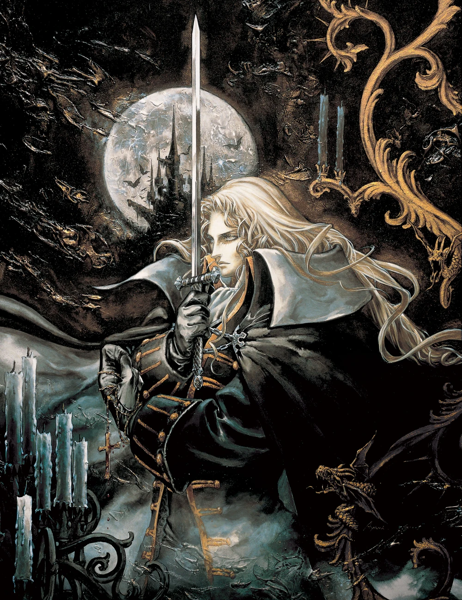
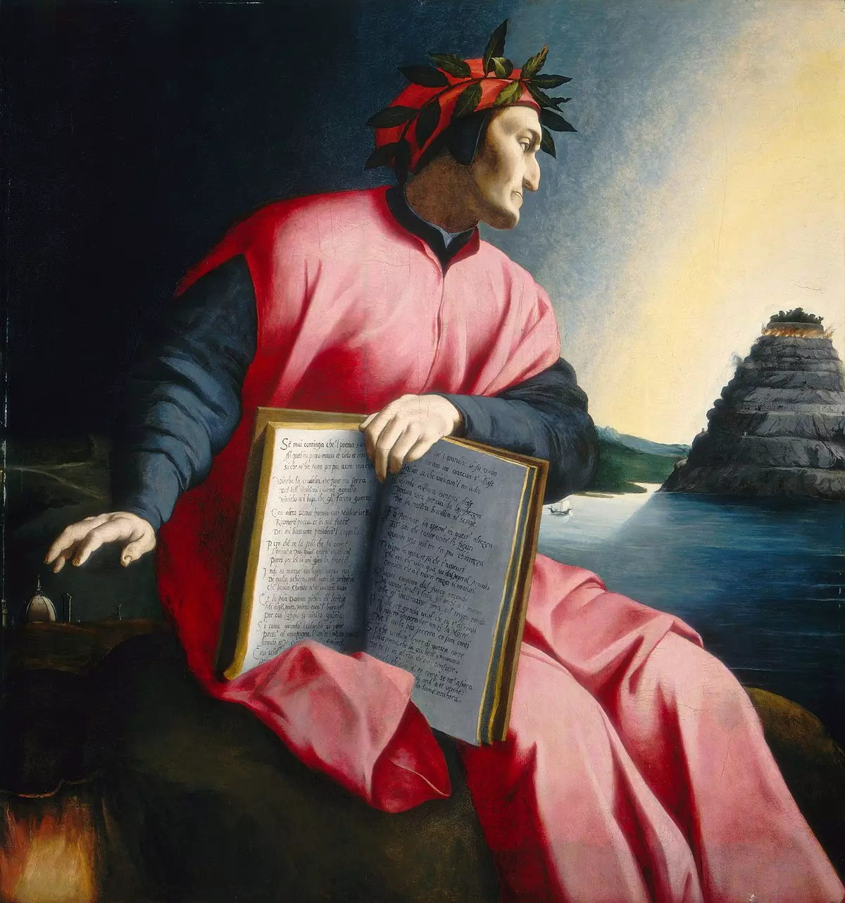
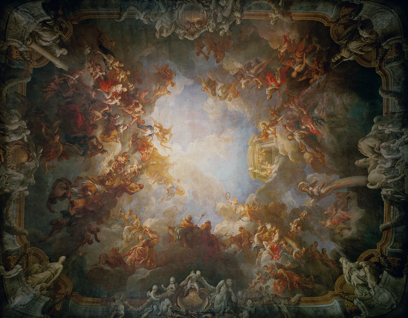
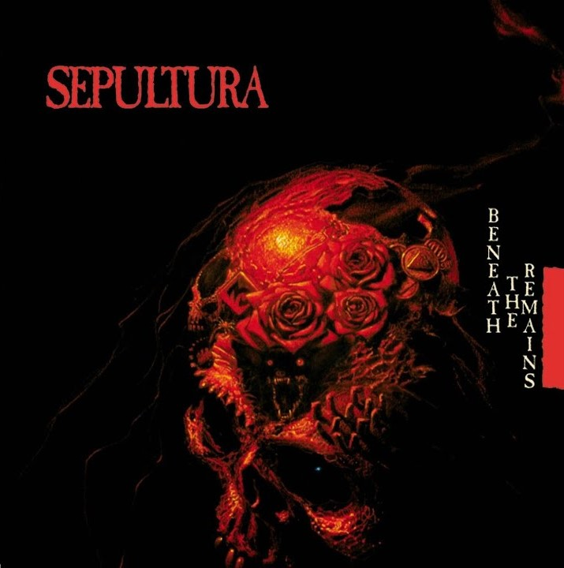
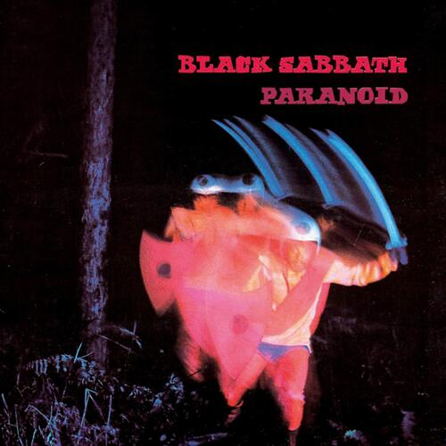
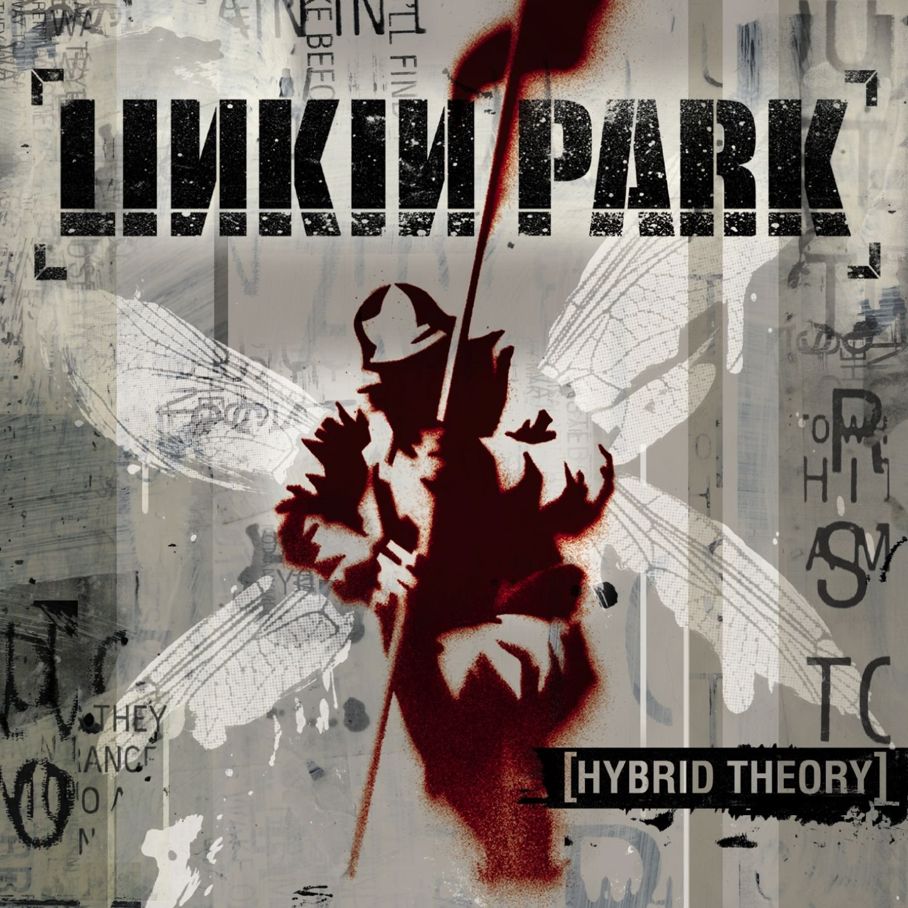
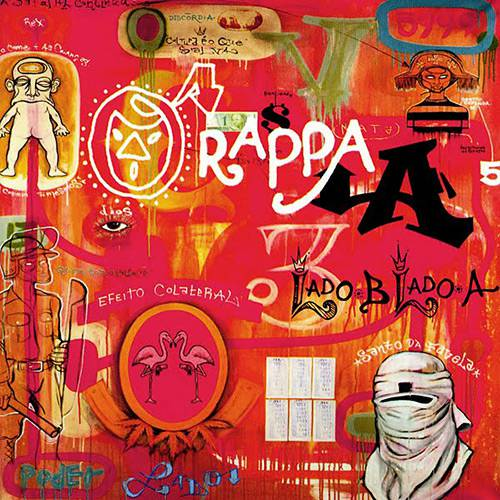

Ayami Kojima.
Ayami Kojima é mais conhecida por seu trabalho na série de videogames Castlevania, de terror gótico e ação, da Konami. Seus primeiros trabalhos de renome foram para o videogame Castlevania: Symphony of the Night, de 1997.
Obras de arte de períodos diferentes da história, desde esculturas, pinturas, murais e entre outros.

Ayami Kojima é mais conhecida por seu trabalho na série de videogames Castlevania, de terror gótico e ação, da Konami. Seus primeiros trabalhos de renome foram para o videogame Castlevania: Symphony of the Night, de 1997.

1674 Gian Lorenzo Bernini, monumento funerário do artista barroco italiano Gian Lorenzo Bernini instalado na "Capela Altieri",na igreja de San Francesco a Ripa.

1530 Agnolo Bronzino, uma pintura a óleo sobre madeira do século XVI atribuída ao artista florentino Agnolo Bronzino.

1736 François Lemoyne, Salão de Hércules no Palácio de Versalhes, na França.

1989 Sepultura.

1970 Black Sabbath.

2000 Linkin Park.

1999 O Rappa.